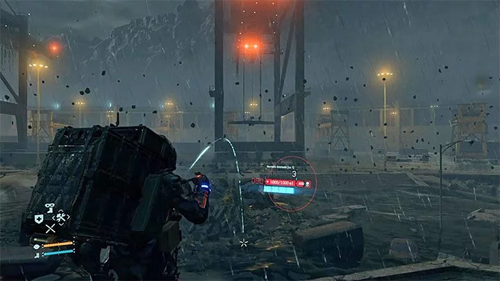
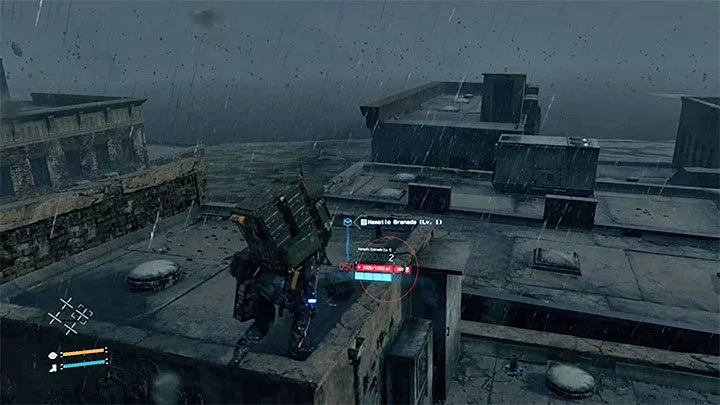
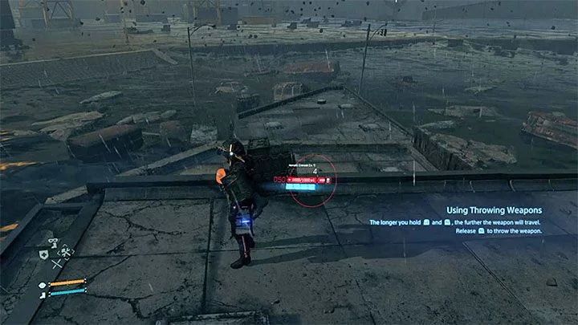
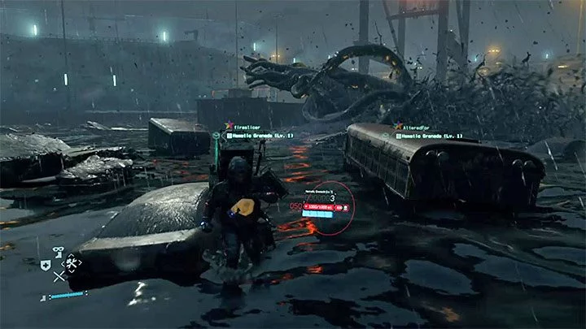
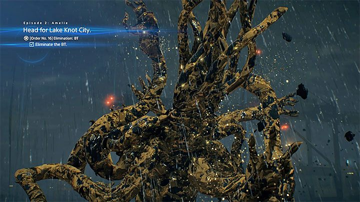
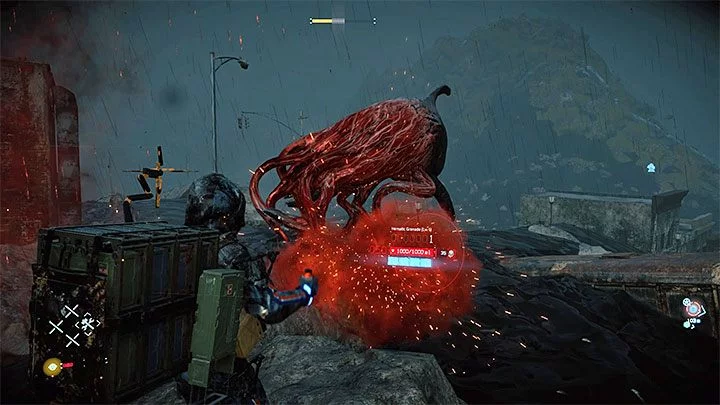

Squid | Death Stranding Boss
How to Defeat the Squid Boss in Death Stranding
The boss fight takes place at the end of the second episode (Amelie), after reaching Knot City port during order #14 - Aid Package Delivery: Port Knot City. The battle will begin soon after you have left towards the place where you board the ship. Higgs appears and he creates a large BT. You will get a mission to defeat the squide - Order No. 16 - Elimination: BT.

Use Hematic Grenades to kill the squid. If you have any, you can start using them right away. Always throw only one grenade. After hitting the squid, wait until it submerges into the liquid and moves to another place. Then, throw another grenade.
If you don't have Hematic Grenades, you will find them in this area - use the scanner for quick detection. There will be more of them if you play online because some grenades may be the ones left by other players.
During this battle, move between the roofs of partially flooded buildings. The hero moves much slower moving in the black goo - this can make it easier for the squid to catch him. Don't try to stay on the same roof the whole battle because the monster can sink that building.
The squid can attack with tentacles and charge at you. You can avoid the tentacles by throwing Hematic Grenades from a safe distance. A universal solution to the monster's charges is to climb the rooftops.
The fight will end after the squid loses all health bars. You will get We Need You trophy. Don't forget to also collect the Chiral Crystals left by the monster.
The squid described above isn't the only one that can be encountered during the game. You can also meet other large BTs. The easiest way to initiate a fight with them is to get caught by levitating BTs.
Squids encountered during free exploration are weaker and fighting them is optional. Of course, you can eliminate them with Hematic Grenades, but if you don't want to use them (or don't own them in your inventory), you can run away. If you manage to get out of the goo and move away from the monster, it will stop chasing Sam.
Credits go to: Gamespressure.